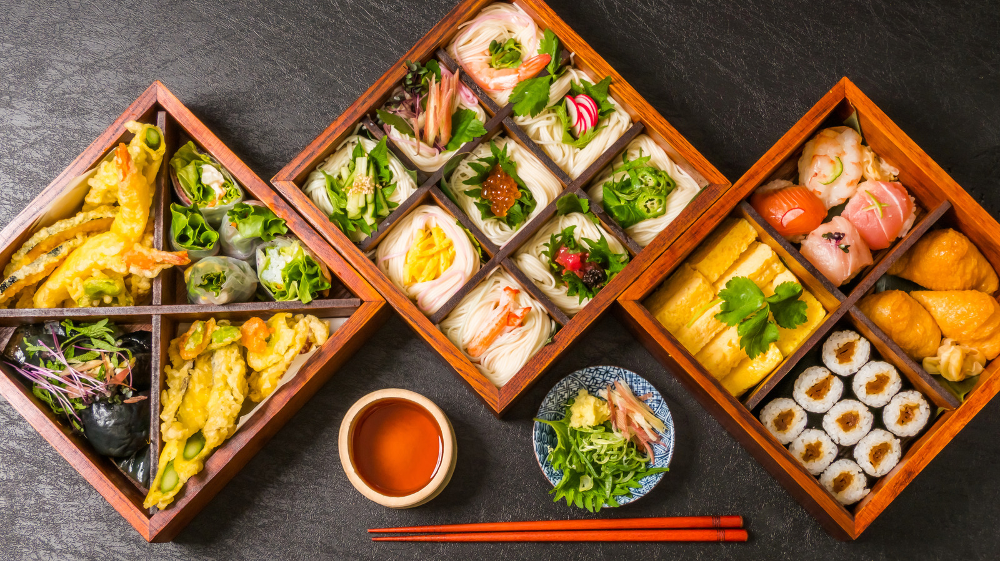

Japanese Recipes
Learn how to prepare various Japanese dishes by using different seasonal or staple Japanese ingredients.
From rice and tofu to miso and noodles, if you have the Japanese ingredients but are unsure what you can do with them, browse our recipes for inspiration!